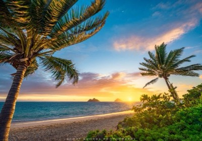
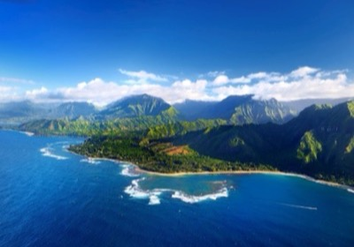
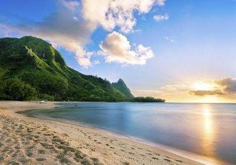
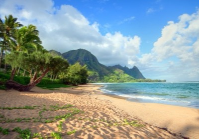
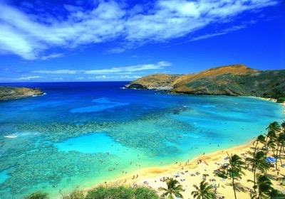
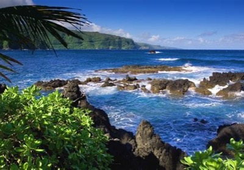
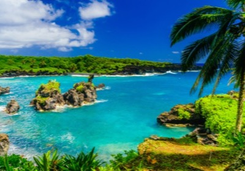

Hawaii Destinations Gallery
From world-famous beaches to dramatic volcanic landscapes, Hawaii offers an extraordinary variety of natural wonders. Explore eight of our most beloved destinations below — each one a reason to book your next trip to the Aloha State.








About the Islands
Hawaii consists of eight main islands, each with its own distinct personality. Oahu is home to Honolulu, Waikiki, and the Pearl Harbor National Memorial — the island that blends urban energy with natural beauty. Maui, known as the Valley Isle, offers some of the world's best whale watching from December through April, along with the dramatic Road to Hana drive. The Big Island contains both the world's most active volcano (Kilauea) and Mauna Kea, the world's tallest mountain when measured from the ocean floor.
Kauai, often called the Garden Isle, is the oldest of the main islands and features the UNESCO-recognized Na Pali Coast, Waimea Canyon, and Hanalei Bay. Whether you are seeking adventure, romance, or tranquil seclusion, Hawaii's islands offer an unmatched array of experiences.